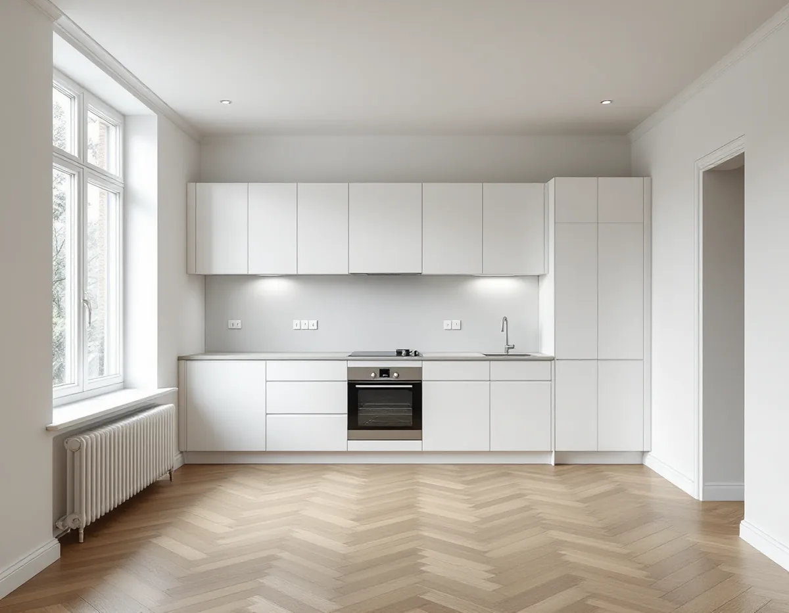
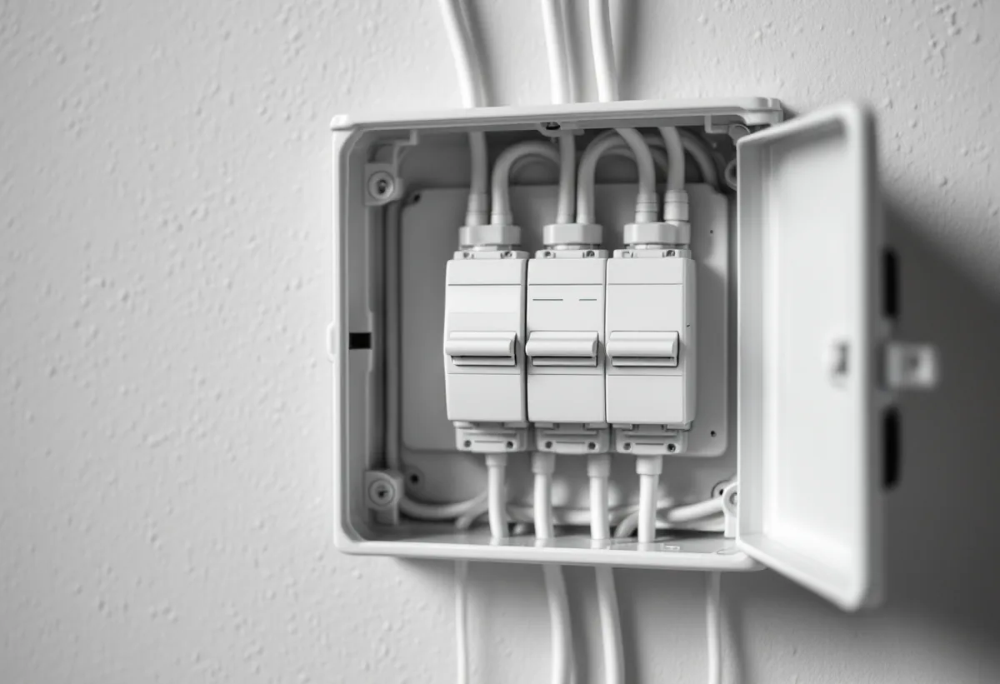
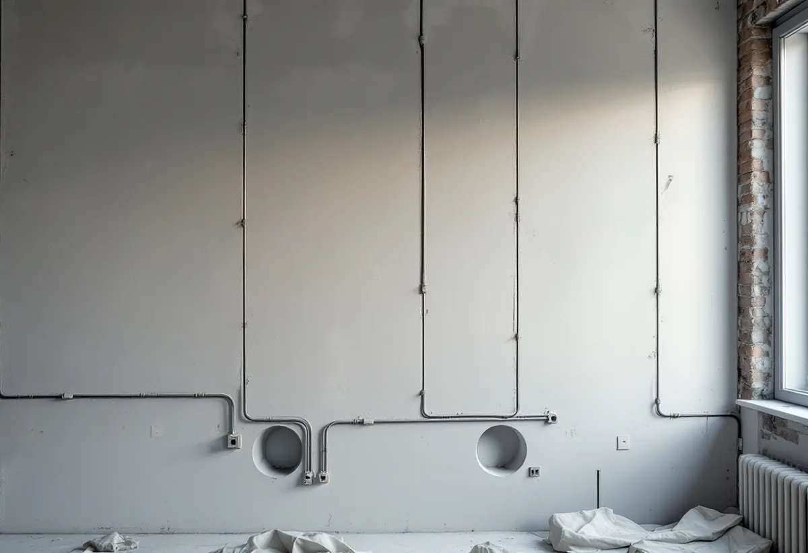

Platsbesök
Vi går igenom lägenheten, elcentralen och det du vill ändra.
När en lägenhet totalrenoveras dras elen ofta om i samma veva som kök, badrum och väggar görs om. Geal Entreprenad AB totalrenoverar bostadsrätter i Solna och planerar elarbetet tillsammans med resten av lägenheten, från föreningens medgivande till dokumentationen du får när allt är klart.

Solna stads förteckning över kulturhistoriskt värdefulla miljöer visar hur olika lägenhetshusen i staden är. Där finns bland annat Stenstaden i Råsunda, 1950-talsbebyggelsen i Råsunda, Skytteholm och Huvudsta, Hagalundshusen och Gamla Hagalund. I stadens karta över kulturhistoriskt klassade byggnader kan du se om just ditt hus är utpekat.
Oavsett när huset byggdes gäller samma grundregler för dig som bor i en bostadsrätt. Solna stad skriver att du behöver fastighetsägarens medgivande för byggåtgärder. Att flytta köket kräver föreningens godkännande och i vissa fall en anmälan om ändring av vatten och avlopp. Att riva en vägg kräver godkännande, och är väggen bärande krävs en anmälan om ändring av bärande konstruktion. Staden råder dig att ställa krav på att den du anlitar bygger enligt bygglovet, följer kontrollplanen och dokumenterar bygget, och att begära slutbesked när allt är klart.

Elsäkerhetsverket skriver att alla bostäder har en elanläggning med en innehavare, och att det är innehavaren som ansvarar för att anläggningen är säker. I en bostadsrätt kan innehavaren vara du själv, bostadsrättsföreningen eller båda. Grundprincipen är att ansvaret ligger på den som har tillträde till att kontrollera anläggningen och rätt att ändra den.
Som innehavare ska du se till att arbete på anläggningen görs av personer med rätt kompetens, och när du bygger om eller renoverar är det du som behöver ta reda på om anläggningen behöver uppdateras. Elinstallationer i bostäder får bara göras av ett elinstallationsföretag som är registrerat hos Elsäkerhetsverket för verksamhetstypen Bostäder, och det kan du kontrollera i myndighetens tjänst Kolla elföretaget. Vid en totalrenovering är det därför bra att tidigt reda ut med föreningen var gränsen går mellan lägenhetens el och husets.
Enligt Elsäkerhetsverket finns det inga regler som säger att en befintlig elanläggning måste uppgraderas när nya säkerhetskrav införs. Huvudregeln är att anläggningen får vara utförd enligt de regler som gällde när den togs i bruk, förutsatt att den är i gott skick och att den inte används på ett nytt sätt som gör den farlig. Bygger du om eller utvidgar en gammal anläggning ska ombyggnaden däremot följa de nya kraven.
Myndigheten tar själv ett exempel som ofta dyker upp i en totalrenovering: ett sovrum som görs om till badrum innebär ändringar i elanläggningen. Den påpekar också att det kan vara klokt att låta elinstallationsföretaget besiktiga hela anläggningen i samband med en renovering, eftersom åldrande elanläggningar kan innebära risk för strömgenomgång och brand. Då vet du vilka delar som kan sitta kvar och vilka som bör bytas medan väggarna ändå är öppna.
För att kunna arbeta i anläggningen behöver elinstallationsföretaget veta hur den är uppbyggd, och som innehavare ska du lämna den informationen, ofta i form av gruppförteckningen till elcentralen. Saknas underlag kan företaget hjälpa till med en kartläggning. När arbetet är klart ska företaget lämna över dokumentation och uppdaterad märkning och kontrollera anläggningen innan den tas i bruk. Elsäkerhetsverket kallar dokumentationen ett kvitto på att arbetet uppfyller reglerna och råder dig att skriva in i avtalet vilken dokumentation du ska få.
Har en del av renoveringen krävt anmälan ska du också begära slutbesked när allt är klart, påminner Solna stad. Om köket och anmälan finns mer under köksrenovering i Solna, om badrum och stambyte under badrumsrenovering i Solna, om väggar och förvaring under snickare i Solna och om renovering av hela bostaden på sidan om villarenovering.

Vi går igenom lägenheten, elcentralen och det du vill ändra.
Vi tar fram en beskrivning av åtgärderna som underlag till styrelsen.
El, VVS, rivning och ytskikt redovisas var för sig.
Påverkas bärande väggar eller vatten och avlopp väsentligt görs en anmälan.
Elarbetet görs av ett registrerat elinstallationsföretag, samordnat med övriga moment.
Du får dokumentation över elen och vi går igenom lägenheten tillsammans.
I en bostadsrätt ger Skatteverket rotavdrag för att installera och komplettera elcentraler, dra elledningar från proppskåpet ut i bostaden och byta vägguttag eller installera inbyggda spotlights. Arbetet ska göras innanför lägenhetens tak, väggar och golv och gälla det du ansvarar för enligt stadgarna. Att dra el till en elcentral utanför bostaden ger inget avdrag.
Företaget får dra av högst 30 procent av arbetskostnaden på fakturan. Rotavdraget är högst 50 000 kr per person och år och högst 75 000 kr tillsammans med rutavdrag. Material och resor ger inget avdrag. Geal drar avdraget direkt på fakturan.
Hur mycket av elen som byts, om kök eller badrum flyttas, hur många väggar som ändras och vilken standard lägenheten får väger tyngst. Efter ett gratis platsbesök får du ett skriftligt kostnadsförslag.
Renovera hela huset eller lägenheten.
Villarenovering →Takbyte, takbesiktning och plåtarbeten.
Takläggare i Solna →Råsunda, Stocksundstorp och Råsta.
Takrenovering i Solna →Kulturmiljöerna, kartan och lovet.
Attefallshus i Solna →Ritningar, kontrollplan och slutbesked.
Byggföretag i Solna →Radhusen, föreningen och lovet.
Fasadmålning i Solna →Putsade villor och krav på material.
Fasadrenovering i Solna →Råsunda, bygglovet och handlingarna.
Fönsterbyte i Solna →Fönster från 1950-talet, kitt och fogar.
Fönsterrenovering i Solna →Ta fram och slipa trägolvet under mattan.
Golvslipning i Solna →Plåt i Solnas kulturmiljöer.
Plåtslagare i Solna →Gatusidan, gårdssidan och konstruktionen.
Takbyte i Solna →Tapet efter husets ålder och underlag.
Tapetsering i Solna →Kulturmiljöerna och lovet.
Tillbyggnad i Solna →Bostadsrätt, stambyte och villor.
Badrumsrenovering i Solna →Bostadsrätter i Råsunda, Hagalund och Huvudsta.
Golvläggare i Solna →Bostadsrätter, fläktar och Råsundas villor.
Köksrenovering i Solna →Villor, radhus och lägenheter i Solna.
Målare i Solna →Väggar, dörrar, balkong och radhus.
Snickare i Solna →